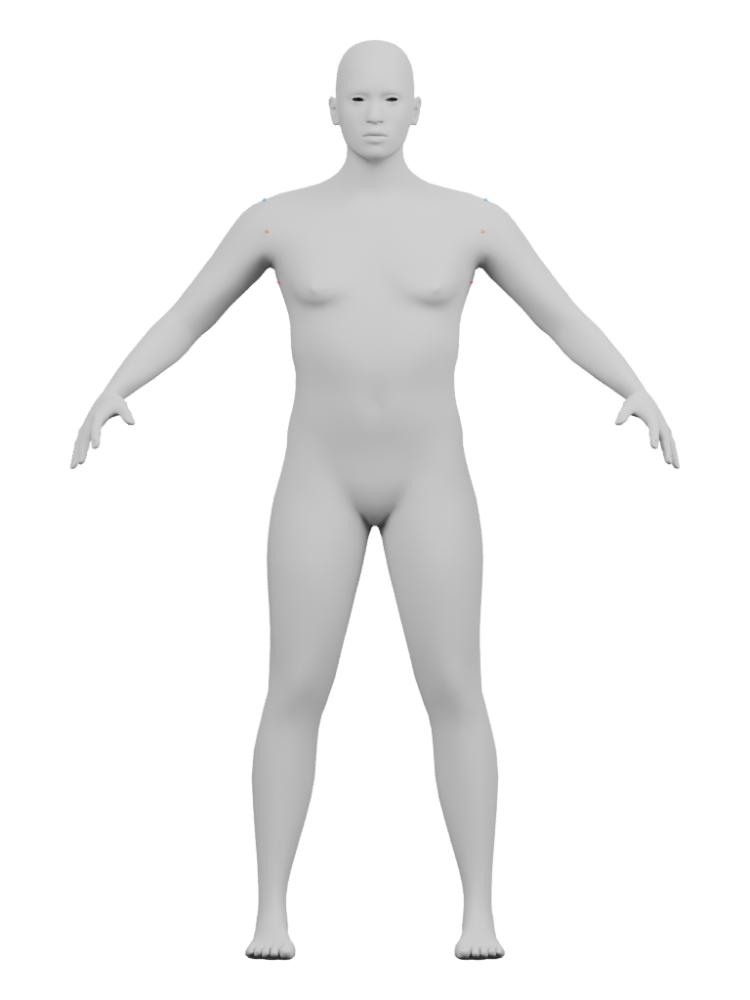
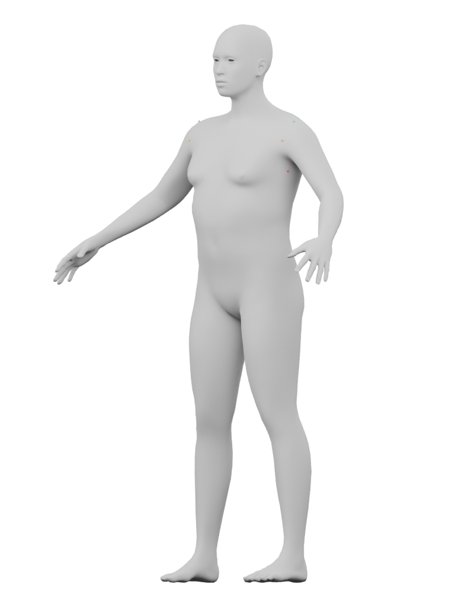
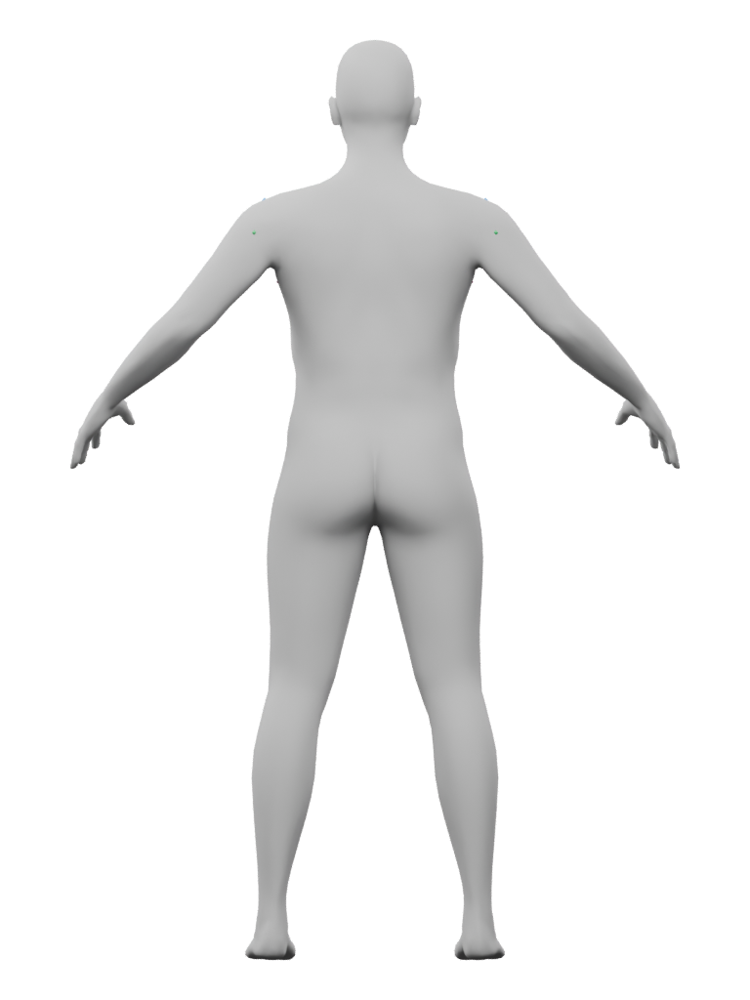

Ari · draft jacket anchors
Eight fixed source points for the original jacket’s shoulder attachment. This is a body-only registration atlas; eyes, hair, rig, skin look and the jacket are omitted.
Draft references retained; continuous seams still required. The shoulder-top, front, underarm and rear points have visible context across these original views. They do not establish an armhole, garment fit or anatomical measurement. The small markers deliberately touch the source skin.
Open an original image to inspect the small markers at full size. Roles may be hidden in one view and visible in another.



| Draft role | Left / right source IDs | Target gap, native units |
|---|---|---|
| Crown | 8069 / 1377 | 0.010359 |
| Front | 10423 / 3756 | 0.057103 |
| Underarm | 8136 / 1448 | 0.021737 |
| Rear | 8345 / 1673 | 0.015267 |
The front target gap is close to the fixed 0.06 limit. It is a target-to-vertex distance, not garment ease or clearance. No target, marker or camera retake followed.